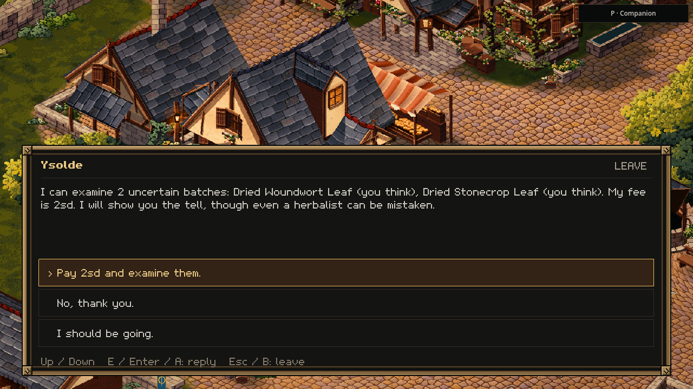
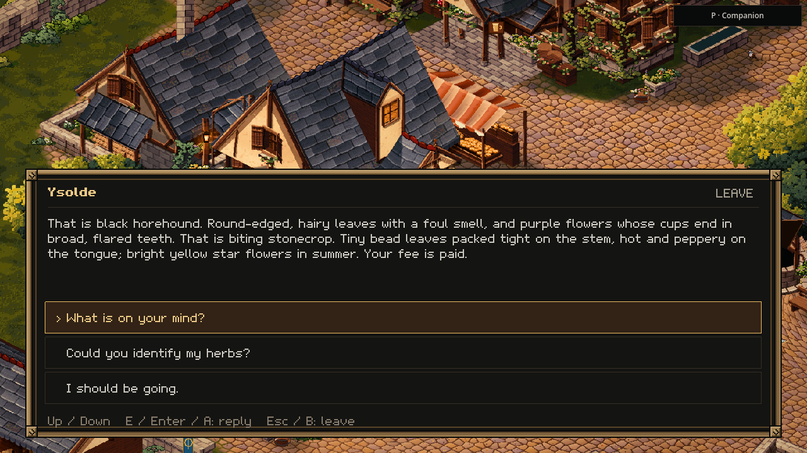

A plant with the wrong name
25 October 2026 · Day 34
Wenna has brought a few dried plant specimens to market. Their names are uncertain. Ysolde can turn them over, name her price, and show you what makes one plant different from its lookalike.
A real question for the herbalist
The town already had a herbalist, a herb garden and a question about identifying plants. That question now leads to a working service. Carry uncertain specimens to Ysolde and she offers an examination, with a fee you can accept or decline.
If you can settle the fee in coin, that payment goes into her actual purse. Otherwise she can keep one specimen from each batch for her trouble. The rest remain yours. Parts from the same source receive the same judgement, even when they are split between stacks in your bag.

The difference is in the tell
A familiar-looking leaf can belong to a different plant. Ysolde uses the knowledge earned through her years as a herbalist, and explains the distinguishing feature from the plant catalogue. Her skill makes her a useful person to seek out, while the existing possibility of a mistaken judgement remains part of the world.

Wenna's specimens are a finite introduction lot. Buying them does not make more appear when you return to the game. The labels, payment and remaining stock belong to the same saved town visit.
A small lesson that stays with the visit
The review follows an ordinary traveller through the town: walk to the cart, buy the specimens, find Ysolde, hear the price, decline, then ask again and pay. A second game process continues that same saved visit. The named specimens and both purses return as they were, while the cart remains sold out.
The conversation is also checked at a compact window size. Changing your mind keeps your money and specimens. An old offer cannot be used after its contents or payment have changed, and pressing the same confirmation twice cannot charge the fee again.
This is a first usable connection between the town's herb trade, its herbalist and the plants' existing lookalike rules. Learning outdoors and building a wider life around gathered plants can grow from that connection.